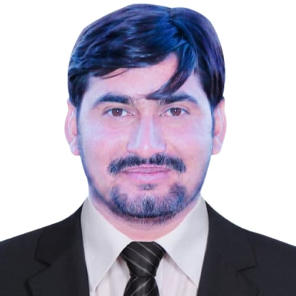

MS Applied Mathematics researcher at NED University of Engineering & Technology, Karachi, supervised by Dr. Fahim Raees. I develop physics-informed neural networks for solving partial differential equations, with a focus on interface-tracking problems in computational fluid dynamics.
Seeking fully-funded PhD positions for Fall 2027

My research focuses on integrating deep learning with classical numerical methods for solving partial differential equations. Specifically, I study how physics-informed neural networks can be designed and trained to accurately capture evolving interfaces governed by the level-set advection equation—a problem central to computational fluid dynamics. I am interested in understanding and improving PINN training dynamics through architecture design, loss balancing, and regularization strategies, and I aim to extend these ideas to neural operator frameworks for broader PDE applications.
Training strategies, loss balancing, causal weighting, and architectures (RFF, modified MLPs) for accurate PDE solutions.
Neural network approaches to interface tracking and advection in computational fluid dynamics.
Operator learning (DeepONet, FNO) for cross-domain PDE solving and surrogate modeling.
Numerical methods for PDEs, optimization, and gradient-based methods for scientific applications.
International Journal for Numerical Methods in Fluids (IJNMF), Wiley, 2026
A 47-experiment ablation study of PINNs for the level-set advection equation across four benchmarks: translation, rigid-body rotation, Zalesak’s disk, and the reversed single-vortex. We systematically investigate network architecture (tanh vs. RFF), training strategies (causal weighting, learning rate scheduling), eikonal regularization, and collocation sampling. An 82× error reduction is achieved through eikonal weight tuning, and the proposed framework yields results approximately 2× more accurate than the state-of-the-art classical numerical method on the reversed vortex benchmark.
NED University of Engineering & Technology, Karachi, Pakistan
Thesis: A Systematic Study of Physics-Informed Neural Networks for Level-Set Interface Advection
Supervisor: Dr. Fahim Raees
Developed a PINN framework for the level-set advection equation and conducted a systematic 47-experiment study across four benchmark problems, identifying a novel RFF–eikonal joint design constraint that achieves an 82× error reduction.
I am actively seeking fully-funded PhD positions (Fall 2027) in scientific machine learning, with a focus on physics-informed methods and neural operators for PDE modeling. If you are interested in my work or have opportunities, I would be glad to hear from you.